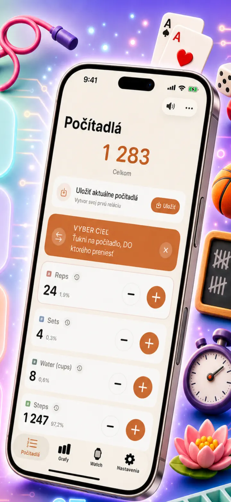
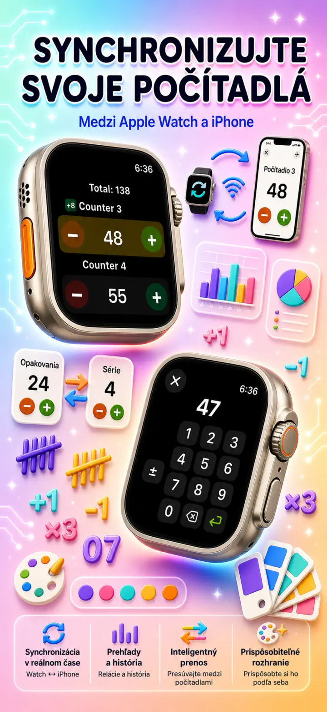
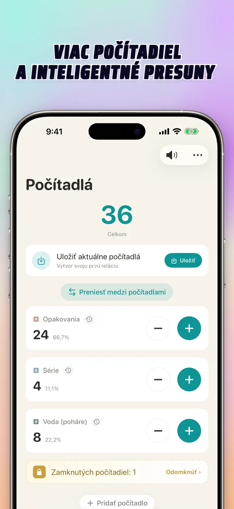
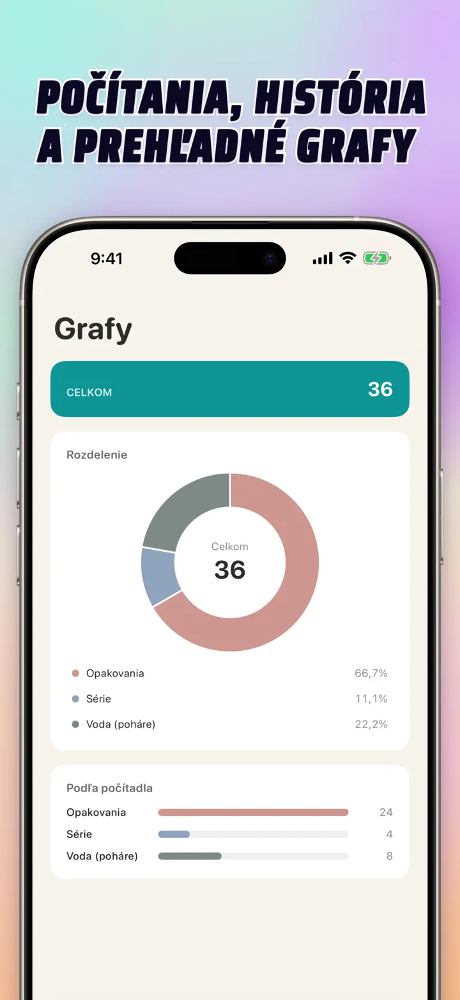
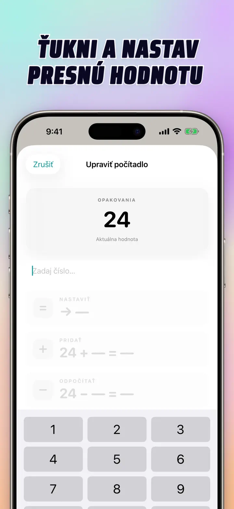
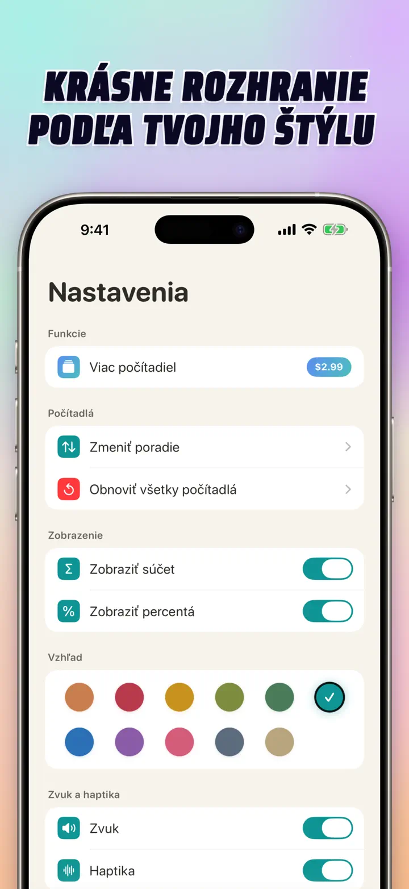
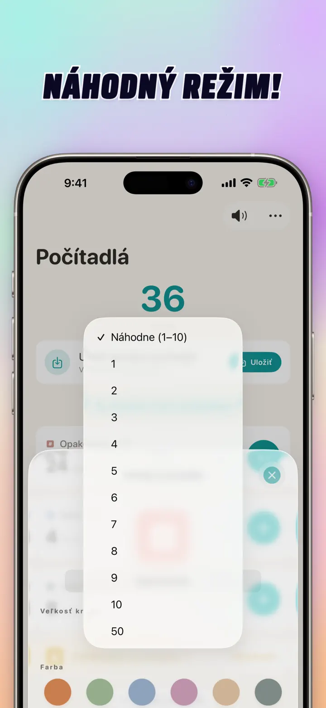

Počítadlo 123
Watch sync, kliky, skóre
Novinka: widgety na ploche — klepni na +/- na widgete bez otvorenia aplikácie. Počítadlo a klikr s Apple Watch sync, náhodný režim, grafy a história.
Stiahnuť v App StoreO aplikácii
Počítadlo 123 je rýchle a flexibilné počítadlo pre iPhone, iPad a Apple Watch. Pomenuj si počítadlá, vyber farbu a počítaj čokoľvek — série v posilňovni, riadky pletenia, ruženec, body v triede, inventúru, skóre hry. Všetko zostáva lokálne na zariadení, funguje offline.
VLASTNÉ POČÍTADLÁ
- Vytvor samostatné počítadlá pre aktivity, hry, rutiny alebo zoznamy
- Vlastný názov a farba pre každé počítadlo
- Potiahni a zoraď
- Podrž pre rýchle počítanie v rade
- Plne offline — bez registrácie, bez cloudu
PRIAMY VSTUP & HROMADNÉ OPERÁCIE
- Ťukni na počítadlo a nastav rovno počiatočnú hodnotu — netreba nulovať
- Hromadné +/-: zmeň počítadlo o ľubovoľné číslo jedným ťuknutím
- Prenos: presuň hodnotu z jedného počítadla na druhé bez dvojitej operácie
- Vlastný krok: jedno ťuknutie pridá 1, 5, 10, 100 alebo čokoľvek si zvolíš
- Živý náhľad každej zmeny
NÁHODNÝ REŽIM
- Počítadlo môže pri každom ťuknutí vylosovať hodnotu 1 až 10
- Pripočítaj alebo odpočítaj náhodné hodnoty tlačidlami + a -
- Hodí sa na cvičenia, hry, odmeny, výučbu a tréningové rutiny
- Každé náhodné ťuknutie sa uloží do histórie počítadla
SÚČTY & GRAFY
- Celkový súčet všetkých počítadiel na jeden pohľad
- Percentuálny režim: podiel každého počítadla na celku
- Interaktívny stĺpcový graf — prepínaj medzi hodnotou (#) a percentami (%)
- Zoraď podľa hodnoty pre okamžitý rebríček
HISTÓRIA & ZDIEĽANIE
- Kompletná história: každé pripočítanie, odpočítanie aj úprava
- Ukladaj sady počítadiel a načítaj ich kedykoľvek
- Zdieľaj konfigurácie s tímom, spolužiakmi alebo kamarátmi
- Históriu zobrazíš ako denný log, zoskupené relácie alebo štatistiky podľa dňa/týždňa/mesiaca
ŽIVÁ SYNCHRONIZÁCIA S APPLE WATCH
- Zmeň počítadlo na iPhone alebo Apple Watch a obe zariadenia zostanú zosynchronizované
- Plnohodnotná natívna watchOS aplikácia — nie iba doplnok k iPhonu
- Názvy, farby a hodnoty synchronizované na zápästí
- Ťukni pre počítanie, podrž pre opakovanie — priamo z hodiniek
- Funguje samostatne, keď iPhone nie je poruke
PRE iPhone, iPad & APPLE WATCH
- Adaptívne rozloženia pre akúkoľvek veľkosť obrazovky
- iPad zobrazí viac počítadiel naraz, podporuje Split View
- Súkromie na prvom mieste: lokálne úložisko, bez cloudu, bez účtu
IDEÁLNE PRE
- Série a opakovania v posilňovni
- Riadky pletenia a očká háčkovania
- Ruženec, tasbih, modlitebné korálky
- Body v triede a dochádzka
- Hádzaná, volejbal, futbal — rýchle skóre
- Stolný tenis
- Inventúra a počítanie zásob
- Mariáš, žolíky, sedma a ďalšie kartové hry
- Kolá v bazéne a na dráhe
- Pozorovanie vtákov
- Počítanie návštevníkov na podujatiach
- Sledovanie návykov a cieľov
Stiahni si Počítadlo 123 a uľahči si každé počítanie — jasne, rýchlo, súkromne.
Zásady ochrany osobných údajov: https://masawata.net/privacy-policy.html Podmienky používania: https://www.apple.com/legal/internet-services/itunes/dev/stdeula/
Snímky obrazovky







Počítadlo 123
Novinka: widgety na ploche — klepni na +/- na widgete bez otvorenia aplikácie. Počítadlo a klikr s Apple Watch sync, náhodný režim, grafy a história.
Stiahnuť v App Store